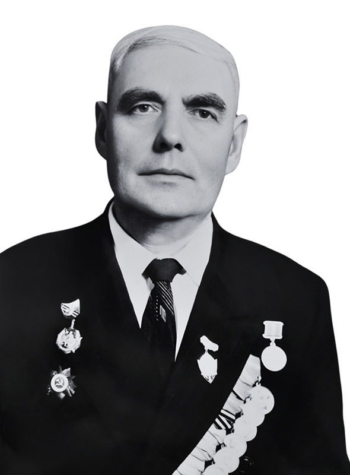

Хабаров Владимир Андреевич родился 18 августа 1908 года в селе Кармала Ивановской волости Бугурусланского уезда Самарской губернии в семье батрака.
С детских лет был свидетелем грозных событий в истории земли и народа: гражданской войны, передела помещичьих земель и кулацких восстаний в Поволжье. В 1917 году родители Владимира Андреевича умерли от непосильного труда, его вместе с двумя младшими братьями отдали на воспитание в Бугурусланский детский дом, где он жил до декабря 1921 года.
В связи с голодом в Поволжье Бугурусланский детский дом в конце декабря 1921 года был эвакуирован в город Витебск. Младшие братья Владимира Андреевича умерли ещё в Бугуруслане, а он, по приезду в Витебск, в январе 1922 года, пошел жить в деревню, где пас скот у крестьян-середняков деревни Голубово и Загорье Михалевского сельского совета Витебского района.
2 февраля 1925 года Владимир Хабаров поступил на работу в совхоз «Мазолово», где работал на разных работах. В том же 1925 году вступил в комсомол.
В начале декабря 1928 года Владимира Андреевича избрали членом бюро райкома (Витебского) комсомола, где он работал в должности пионерработника. В июле 1929 года перешел на работу в Витебское отделение «Союзхлеб» на должность заведующего заготовительным пунктом по приемке сена. 1 октября 1929 года Владимир Хабаров снова вернулся на работу в совхоз «Мазолово», где работал весовщиком на мельнице.
В 1932 году стал кандидатом в члены ВКП(б), а в марте 1938 года был принят в члены ВКП(б). Во время коллективизации 1929-1932 гг. принимал активное участие в организации колхозов в Боровлянском сельском совете Витебского района и в ликвидации кулацкой банды Цветковых. В начале июня 1933 года в числе 25-тысячников Владимир Андреевич был назначен председателем правления колхоза им. В.И. Чапаева. В мае 1936 года по состоянию здоровья был освобожден от должности и переведен на работу в учхоз «Мазолово» на должность сменного мастера прядильного цеха.
В октябре 1937 года после ликвидации учхоза «Мазолово» был назначен заведующим мельницей д. Мазолово.
C 1-го января 1939 года по решению бюро Витебского райкома партии переведен на работу в Мазоловскую МТС на должность заместителя директора по расчетам.
9 сентября 1939 года был мобилизован в ряды Красной Армии, принимал участие в освобождении территории Западной Беларуси.
30 апреля 1940 года демобилизовался из армии, после чего снова работал заместителем директора Мазоловской МТС.
9 июля 1941 года, с началом оккупации немецко-фашистскими захватчиками г. Витебска и территории Витебского района, ушел в партизаны, так как по решению Витебского обкома КПБ вместе с другими коммунистами района был оставлен в тылу врага для организации партизанского движения на Витебщине. Сначала Владимир Хабаров был комиссаром партизанского отряда М.Ф. Бирюлина, а затем, с февраля 1943 года, комиссаром Первой Витебской партизанской бригады.
В начале ноября 1943 года Первая Витебская партизанская бригада соединилась с частями Красной Армии, после чего Владимир Хабаров до марта 1944 года находился в оперативной группе Витебского района, а с 1-го марта 1944 года был назначен директором Мазоловской МТС.
С января 1953 по ноябрь 1953 года Владимир Андреевич работал начальником мелиоративного отряда Витебской МТС, откуда был переведен на работу в учхоз Лужеснянского сельхозтехникума на должность управляющего учебным хозяйством.
В сентябре 1956 года Владимир Хабаров был направлен на учебу в Городокский техникум механизации сельского хозяйства, который закончил 20 июля 1958 года.
В августе 1958 года Витебским РК КПБ был направлен на работу председателем колхоза им. Ленина Николаевского сельского совета Витебского района.
10 июля 1959 года трудоустроился на известковый завод № 3 «Верховье» мастером по ремонту мостов.
С 7 октября 1961 года работал заведующим ремонтными мастерскими, а затем участковым механиком в Мазоловском строительно-монтажном управлении мелиоративных работ, где сначала работал.
С 1 марта 1969 года - персональный пенсионер республиканского значения. Имеет правительственные награды: орден «Красного Знамени», орден «Отечественной войны II степени», орден «Знак почета» и 8 медалей.
Проживал Владимир Андреевич Хабаров в Мазолово, в деревянном доме возле современной 5-этажки по улице Мелиораторов.
После Великой Отечественной войны Владимир Андреевич встречался со школьниками, оставил воспоминания, рассказывал ребятам о своей биографии.